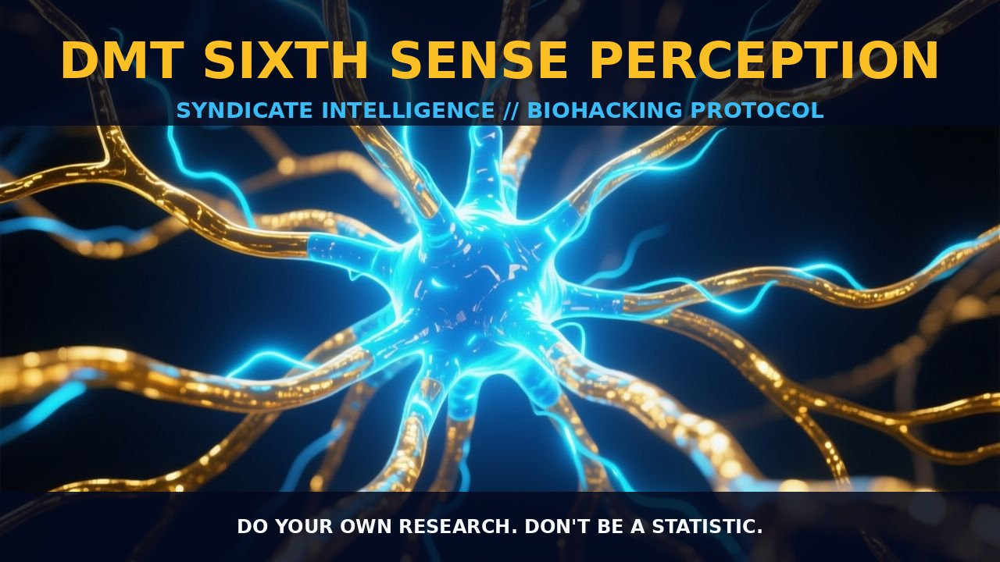

DMT Sixth Sense Perception: Exploring Alternate Neural Modalities

1. The Mechanism
N,N-Dimethyltryptamine (DMT) is a naturally occurring psychedelic compound with a mechanism of action primarily linked to its agonistic effect at the 5-HT2A receptor. This receptor activation modulates neurotransmitter release and neuronal activity, influencing a range of cognitive and sensory processes.
DMT induces a transient and immersive altered state of consciousness characterized by vivid and complex visual imagery, somatosensory effects, and alterations in affective and cognitive processing. Perhaps most distinctive is the frequently reported sense of immersion into what appears to be another world or dimension, often populated with strange objects and entities.
The DMT experience is not merely a visual or auditory hallucination but a profound alteration of the subjective perception of reality, often leading to lasting revisions in beliefs about consciousness and the nature of reality itself. The vivid imagery and encounters with entities reported by DMT users suggest a deeper engagement with the neural substrates of perception and consciousness, potentially revealing alternate perceptual modalities or dimensions.
DMT's influence on the brain extends beyond the 5-HT2A receptor to affect other neurotransmitter systems, such as serotonin and dopamine. It is hypothesized that the activation of these pathways contributes to the rich and intricate visual content experienced during DMT use. Additionally, DMT's impact on neural oscillations and connectivity patterns within the brain, particularly in the default mode network and the frontolateral/frontomedial cortex, suggests a broader reconfiguration of neural activity. These changes are thought to underpin the unique perceptual and cognitive states experienced during DMT-induced altered states.
The transient nature of DMT's effects is also noteworthy, with the compound having a short half-life that allows for rapid onset and offset of its psychoactive properties. This rapid cycling is crucial for the intense and immersive quality of the DMT experience, allowing users to experience profound changes in perception and consciousness within a short timeframe.
2. Biological Leverage
DMT's capacity to modulate the 5-HT2A receptor and influence neural pathways offers a unique window into the mechanisms of human perception and consciousness. The activation of the 5-HT2A receptor by DMT enhances neurotransmitter release and neural activity, leading to a cascade of effects on sensory and cognitive processes. This modulation is thought to alter the balance of neural oscillations and connectivity patterns, potentially revealing alternate perceptual modalities or dimensions that are not typically accessible during ordinary waking consciousness.
The role of the 5-HT2A receptor in perceptual and cognitive processing is well-established, with its activation leading to enhanced neural activity and altered patterns of neural oscillations. This increased neural activity and reconfigured connectivity patterns are thought to contribute to the vivid and intricate visual content experienced during DMT use. Furthermore, the engagement of additional neurotransmitter systems, such as serotonin and dopamine, suggests a broader reconfiguration of neural activity that extends beyond the primary 5-HT2A receptor activation.
Functional neuroimaging studies have provided insights into the neural correlates of the DMT experience, revealing decreased blood oxygenation level-dependent responses in extrastriate regions during visual alerting and in temporal regions during auditory alerting. These findings support the hypothesis that DMT induces a reconfiguration of neural activity patterns, leading to altered sensory and cognitive processing. The visual and auditory effects observed during DMT use are particularly pronounced, suggesting a significant impact on the neural substrates involved in these modalities.
Moreover, the engagement of frontolateral/frontomedial cortex and medial temporal lobe during DMT-induced altered states further underscores the broader reconfiguration of neural activity. These regions are involved in various cognitive and perceptual processes, including attention, memory, and self-reflection. The activation of these regions during DMT use suggests a deeper engagement with the neural substrates of perception and consciousness, potentially revealing alternate perceptual modalities or dimensions that are not typically accessible during ordinary waking consciousness.
The vivid imagery and encounters with entities reported by DMT users suggest a deeper engagement with the neural substrates of perception and consciousness, potentially revealing alternate perceptual modalities or dimensions. The rich and intricate visual content experienced during DMT use is thought to be endogenously produced by the brain, but the construction of such worlds is beyond the imaginative capacity of most individuals. This suggests that DMT may provide access to 'other' channels or dimensions that we cannot usually perceive with our five senses, potentially revealing alternate perceptual modalities or dimensions that are not typically accessible during ordinary waking consciousness.
3. Tactical Implementation
DMT can be administered via various routes, including inhalation, oral ingestion, and intravenous injection. Inhalation, typically through vaporization, is the most rapid method, leading to a rapid onset of effects within seconds. Oral ingestion, as part of ayahuasca, involves a longer onset due to the need for intestinal absorption. Intravenous injection allows for precise dosing and rapid onset, making it a preferred method for research studies. The typical dose for DMT ranges from low-to-moderate amounts, with individual responses varying based on factors such as body weight and tolerance.
Timing is critical for DMT sessions, as the compound's effects are transient. Sessions are typically conducted in a controlled and supportive environment to enhance the experience and ensure safety. The setting should be comfortable, with minimal distractions, and a trusted guide or facilitator to support the user. The duration of the session is generally short, lasting 15-30 minutes, with a longer period for integration post-session.
Stacking DMT with other compounds can enhance its effects. For instance, combining DMT with other hallucinogens like psilocybin can deepen the perceptual and cognitive alterations. Additionally, pairing DMT with neuroprotective agents such as antioxidants or B-vitamins can mitigate potential side effects and support neural health.
Practical considerations include ensuring a clean and comfortable setting, minimizing sensory input, and preparing for potential physical and emotional experiences. Users should be well-hydrated and in good physical health, with a stable mental state, to optimize the experience. Regular practice and gradual dosing can help build tolerance and enhance the sixth sense perception over time.
Prostar Life Hack
Ensure a comfortable and controlled environment for DMT sessions to enhance the experience and ensure safety. Use a trusted guide or facilitator to support you during the session.
[ AUTHOR: LEAD TECHNICAL RESEARCHER ]